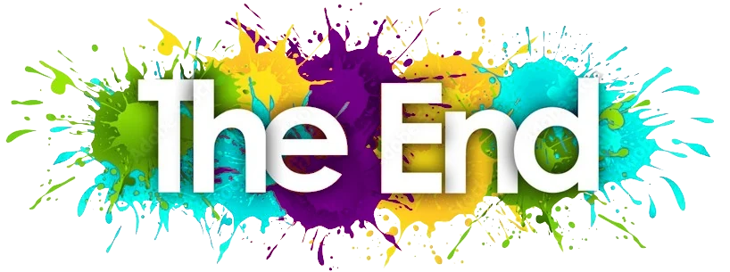
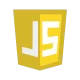
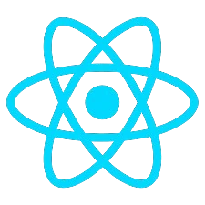

Bonjour,
Je suis développeuse web frontend basée en Île de France.
Spécialisée dans la création d'expériences web modernes et dynamiques, combinant créativité et techniques innovantes, je propose des interfaces intuitives, des animations interactives et une expérience utilisateur de qualité. Les meilleures pratiques SEO, pour l'optimisation du référencement sur les moteurs de recherche, et le respect des principes du green code, font partie intégrante de ma conception d'un site web performant et durable.
Mes compétences :
- HTML (structure de pages web)
- CSS (styles, responsive design, animations)
- Sass (préprocesseur CSS)
- JavaScript (interactions, manipulation du DOM, dynamisation de sites)
- React (création de composants d'interface utilisateur)
- Redux (gestion de l'état global)
- React Router (navigation entre pages)
- Node.js (exécution de JavaScript côté serveur)
- API REST (intégration avec des back-end et échanges client/serveur)
- Git et GitHub (gestion de version)
- Figma (utilisation de maquettes pour le design)
- Chrome DevTools (debugging et optimisation des performances)
- Lighthouse (analyse des performances et du SEO)
- Wave (évaluation de l'accessibilité)
- Swagger (documentation des API)
- Visual Studio Code (environnement de développement)
- Yarn (gestion des packages)
- Gestion des performances, SEO, et accessibilité
HTML5
CSS3
Javascript
NodeJs
React
Sass



1 / 6